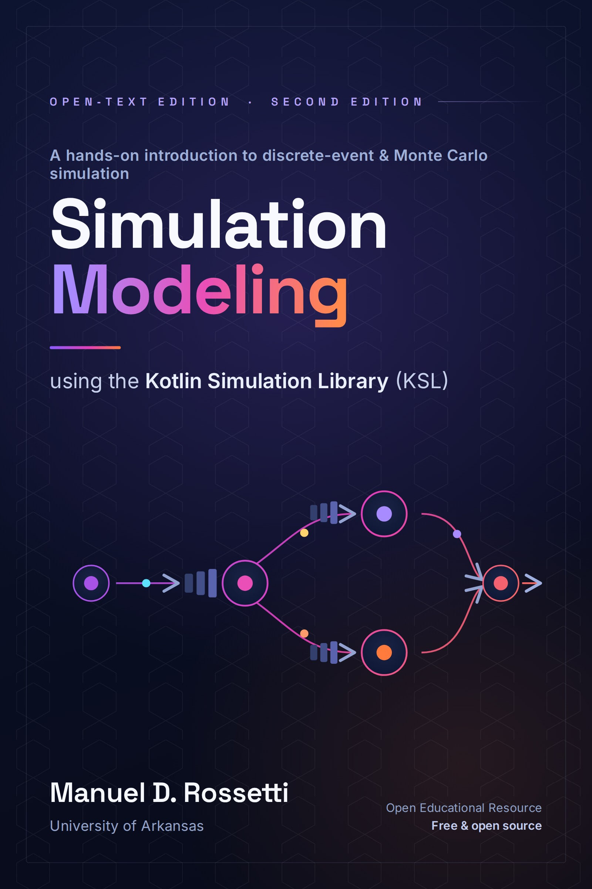

Simulation Modeling using the Kotlin Simulation Library (KSL)
Preface

This book is intended as an introductory textbook for a first course in discrete-event simulation modeling and analysis for upper-level undergraduate students as well as graduate students. While the text is focused towards engineering students (primarily industrial engineering) it could also be utilized by computer science and data science majors. Practitioners interested in learning simulation and the KSL could also use this book independently of a course.

The online version of this book is licensed under the Creative Commons Attribution-NonCommercial-NoDerivatives 4.0 International License.
When citing this book, please use the following format:
Rossetti, M.D. (2023). Simulation Modeling using the Kotlin Simulation Library (KSL), On-line and Open Text Edition. Retrieved from https://rossetti.github.io/KSLBook/ licensed under the Creative Commons Attribution-NonCommercial-NoDerivatives 4.0 International License.
The purpose of this book is to provide an overview of the Kotlin Simulation Library (KSL). The KSL facilitates simulation modeling by providing Kotlin language libraries that ease the development of simulation models. The KSL has a substantial amount of functionality implemented in the following packages:
ksl.utilities- a variety of support utilities for performing discrete-event and Monte Carlo experiments including:- probability distribution models
- random number generation
- random variate generation
- statistical collection (observation based and time weighted summary statistics, histograms, frequency tabulation, bootstrapping, box plot summary, etc.)
- statistical comparison
- Markov chain Monte Carlo
- Extension functions for Arrays (sampling, filling, statistics, input, output)
- file input and output utilities (CSV processing, Markdown tables, Excel, tabular files)
- database - supports the creation, connection, and usage of databases
- export databases to CSV, text files, Excel, DataFrames
- import data to tables from Excel worksheets
- capture simulation results to well-structured database for post processing
ksl.calendar- linked list, priority queue, skew heap, and tree set based event calendarsksl.simulation- model development, experiment execution, reporting, batchingksl.observers- variable tracing, replication data collection, Welch plotting, data file collectionksl.modeling- event generation, schedules, random elements
- non-homogeneous Poisson process generation
- queues with automated statistical collection
- process view implementation based on coroutines
- response variable statistical collection
- resource capacity schedules
- responses collected by periods of time
- aggregate statistical collection
ksl.simopt- provides a framework for performing simulation optimizationksl.controls.experiments- provides a framework for performing designed experiments
This book discusses a large portion of this functionality. The KSL Github project page discusses how to access the code and examples discussed within this textbook.
Software oriented guides to the previous packages are also available. The guides indicate the basics for getting started with the various packages associated with the KSL and some of the underlying technical details of the implementation. In addition to the base KSL library, the web-site has applications that enable GUI and text-oriented interfaces for the essential aspects of working with simulation models. The list of applications and their guides can be found here.
Portions of this book also appear within my other textbook on simulation:
Rossetti, M.D. (2021). Simulation Modeling and Arena, 3rd and Open Text Edition. Retrieved from https://rossetti.github.io/RossettiArenaBook/ licensed under the Creative Commons Attribution-NonCommercial-NoDerivatives 4.0 International License.
Release History
You are reading the on-line edition of Simulation Modeling using the Kotlin Simulation Library (KSL) by Dr. Manuel D. Rossetti. Because of its on-line nature, updated versions of the book will be released, as needed, to correct issues and add new material. This section summarizes noteworthy updates.
- 1st Edition, Version 1.0, released January 2023
- first main release of text book
- 2nd Edition Version 2.0, released January 2024
- Added distribution fitting Distribution Fitting Using the KSL to 2 Modeling Randomness
- Added 9 Advanced Monte Carlo Methods on advance Monte Carlo methods
- 2nd Edition Version 2.1, released July 2024
- Added numbered examples to each chapter corresponding to code in KSLExamples project
- Added examples on generation from mixture, truncated, and shifted distributions to Creating and Using Random Variables of 2 Modeling Randomness. Also added how to generate using the acceptance-rejection technique to Creating and Using Random Variables.
- Added two new examples to A Simple Inspection Process and Stochastic Activity Networks to 3 Monte Carlo Methods.
- Added More Drive Through Fun on station modeling to 4 Introduction to Discrete Event Modeling.
- Added Screening Procedures for coverage of screening techniques
- Added KSL Plotting Utilities Appendix E — KSL Utility Packages for coverage of plotting utilities.
- 2nd Edition, Version 2.2, released February 2025
- Added Chapter 8 for modeling entity movement
- 2nd Edition, Version 2.3, released August 2025
- Updated chapters to be consistent with release 1.2.2 of the KSL
- 2nd Edition, Version 2.4, released September 2025
- Added Chapter 10 on simulation optimization
- 2nd Edition, Version 2.5, released July 2026
- Split former chapter 10 into two chapters: 10 and 11
- Chapter 10 now contains the scenario material of Chapter 5 and the experiment material of chapter 10
- Chapter 11 is now solely dedicated to simulation optimization.
If you find typographical errors or other issues related to the text or supporting files, then please use the book’s repository’s issue tracking system to create a new issue. You should first check if the same or similar issue has already been submitted. The issue tracking system is for filing issues about the correctness of the text or files. It is not about general questions about simulation concepts, solutions to homework, how to do something in the KSL, etc. Such issues will not be considered and will be deleted as needed.
KSL Project Page
The KSL project is based on a git repository
The KSL is a multi-project gradle project with key projects:
KSLCore- the main project with core development functionalityKSLExamples- a project that has the examples related to this textbook as well as additional illustrative examplesKSLProjectTemplate- a gradle based project that is configured to use theKSLCorefunctionality as a dependency. Use this project as a starter template for projects using the KSL.
Additional modules exist to support KSL based applications. See the repository for the details.
The KSL documentation is generated by KDocs.
Artifacts for using the KSL have been made available on Maven central.
Book Support Files
By cloning the repository or downloading the zip archive, you can have a local copy of the entire book. Thus, if you do not have regular access to internet services, you can still read and utilize the materials. I encourage students within a class setting to clone the book repository using a program such as Github desktop.
Acknowledgments
Special thanks to the Open Educational Resources team at the University of Arkansas. This work was supported in part by a grant from the OER Course Materials Conversion Faculty Funding program at the University of Arkansas.
I would like to thank John Wiley and Sons, Inc. for their flexibility in returning to me my copyrights from previous editions of my textbooks. This allowed this open textbook to exist. I would also like to thank the students in my classes who tested versions of my work and provided feedback, suggestions, and comments.
Lastly, I would like to thank my children Joseph, and Maria, who gave me their support and understanding and my wife, Amy, who not only gave me support, but also helped with creating figures, diagrams, and with proof-reading. Thanks so much!
Intended Audience
Discrete-event simulation is an important tool for the modeling of complex systems. It is used to represent manufacturing, transportation, and service systems in a computer program for the purpose of performing experiments. The representation of the system via a computer program enables the testing of engineering design changes without disruption to the system being modeled.
Simulation modeling involves elements of system modeling, computer programming, probability and statistics, and engineering design. Because simulation modeling involves these individually challenging topics, the teaching and learning of simulation modeling can be difficult for both instructors and students. Instructors are faced with the task of presenting computer programming concepts, probability modeling, and statistical analysis all within the context of teaching how to model complex systems such as factories and supply chains. In addition, because of the complexity associated with simulation modeling, specialized computer languages are needed and thus must be taught to students for use during the model building process. This book is intended to help instructors with this daunting task.
Traditionally, there have been two primary types of simulation textbooks 1) those that emphasize the theoretical (and mostly statistical) aspects of simulation, and 2) those that emphasize the simulation language or package. The intention of this book is to blend these two aspects of simulation textbooks together while adding and emphasizing the art of model building. Thus the book contains chapters on modeling and chapters that emphasize the statistical aspects of simulation. However, the coverage of statistical analysis is integrated with the modeling in such a way to emphasize the importance of both topics.
This book utilizes the Kotlin Simulation Library as the primary modeling tool for teaching simulation. The KSL is open source and freely available. Users familiar with commercial simulation languages should note that the KSL has many of the features found in those languages.
I feel strongly that simulation is best learned by doing. The book is structured to enable and encourage students to get engaged in the material. The overall approach to presenting the material is based on a hands-on concept for student learning. The style of writing is informal, tutorial, and centered around examples that students can implement while reading the chapters. The book assumes a basic knowledge of probability and statistics, and an introductory knowledge of computer programming. Even though these topics are assumed, the book provides integrated material that should refresh students on the basics of these topics. Thus, instructors who use this book should not have to formally cover this material, and can be assured that students who read the book will be aware of these concepts within the context of simulation.
Organization of the Book
1 Simulation Modeling is an introduction to the field of simulation modeling. After 1 Simulation Modeling the student should know what simulation is and be able to put the different types of simulation into context. 2 Modeling Randomness introduces the basics of random number generation and random variate generation within the context of the KSL library.
3 Monte Carlo Methods introduces problem solving and statistical concepts related to Monte Carlo simulation experiments. 4 Introduction to Discrete Event Modeling introduces the important concept of how a discrete-event clock “ticks” and sets the stage for process modeling using activity diagramming. Finally, simple (but comprehensive) examples of KSL event modeling are presented.
5 Analyzing and Accessing Simulation Output presents important concepts of statistical analysis that occur within discrete-event simulation modeling. This chapter should provide a refresher for students on statistical concepts. 6 Process View Modeling Using the KSL dives deeper into process-oriented modeling. Important concepts within process-oriented modeling (e.g. entities, attributes, activities, state variables, etc.) are emphasized within the context of a number of examples. In addition, a deeper understanding of the KSL is developed including flow of control and input/output. After finishing 6 Process View Modeling Using the KSL, students should be able to model interesting systems from a process viewpoint using the KSL. 7 Advanced Event and Process View Modeling presents more advanced concepts within simulation and especially how the KSL facilitates the modeling. In particular, non-stationary arrivals and resource staffing are introduced in 7 Advanced Event and Process View Modeling, as well as constructs for more advance modeling with resources. 8 Modeling Entity Movement addresses how to model the movement of entities within constrained and unconstrained contexts. 9 Advanced Monte Carlo Methods presents more advanced techniques used within Monte Carlo methods. 10 Simulating Many Scenarios and Performing Experiments presents an introduction to using experimental design techniques within the context of simulation modeling. In addition, 11 Simulation Optimization Methods provides and introduction to the important area of simulation optimization methods and how the KSL facilitates the application of these techniques.
The Appendix A — Generating Pseudo-Random Numbers and Random Variates and Appendix B — Probability Distribution Modeling are extremely useful for understanding the concepts of random variate generation and distribution modeling. For undergraduate students, I recommend starting with Appendix A — Generating Pseudo-Random Numbers and Random Variates and Appendix B — Probability Distribution Modeling. Appendix C — Queueing Theory provides an overview of queueing theory, which can be useful when verifying and validating the results of simulation models involving queues. Discrete Distrbutions, Continuous Distrbutions, and Appendix F — Statistical Tables provide information on probability distributions and statistical tables. Of particular note is Appendix E — KSL Utility Packages, which covers useful utility functionality in support of KSL modeling.
Future chapters are planned for when new KSL functionality is developed.
- Preface
- 1 Simulation Modeling Simulation Modeling
- 2 Modeling Randomness Modeling Randomness
- 3 Monte Carlo Methods Monte Carlo Methods
- 4 Introduction to Discrete Event Modeling Introduction to Discrete Event Modeling
- 5 Analyzing and Accessing Simulation Output Analyzing Simulation Output
- 6 Process View Modeling Using the KSL Process View Modeling
- 7 Advanced Event and Process View Modeling Advanced Event and Process View Modeling
- 8 Modeling Entity Movement Modeling Entity Movement
- 9 Advanced Monte Carlo Methods Advanced Monte Carlo Methods
- 10 Simulating Many Scenarios and Performing Experiments Simulating Many Scenarios and Performing Experiments
- 11 Simulation Optimization Methods Simulation Optimization Methods
- Appendices
- Appendix A — Generating Pseudo-Random Numbers and Random Variates Generating Pseudo-Random Numbers and Random Variates
- Appendix B — Probability Distribution Modeling Probability Distribution Modeling
- Appendix C — Queueing Theory Queueing Theory
- Appendix E — KSL Utility Packages KSL Utility Packages
- Discrete Distrbutions Discrete Distributions
- Continuous Distrbutions Continuous Distributions
- Appendix F — Statistical Tables Statistical Tables
Depending on the level of programming skill of the students, instructors should be able to cover 1 Simulation Modeling through 6 Process View Modeling Using the KSL within a semester course.